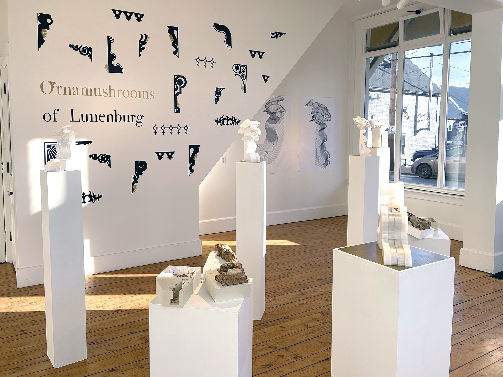
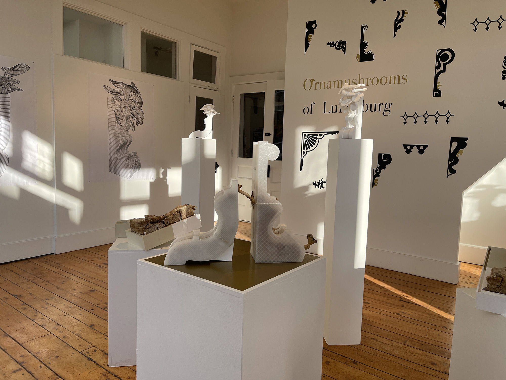
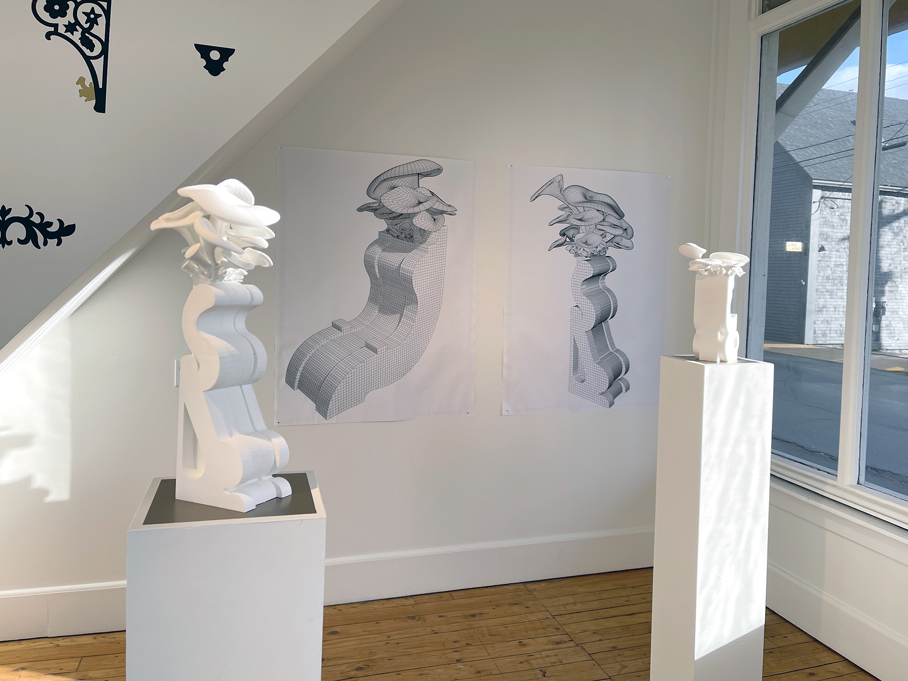
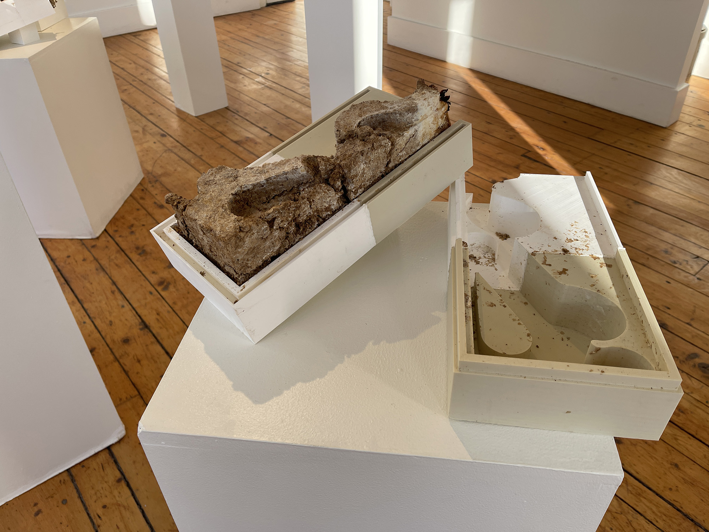
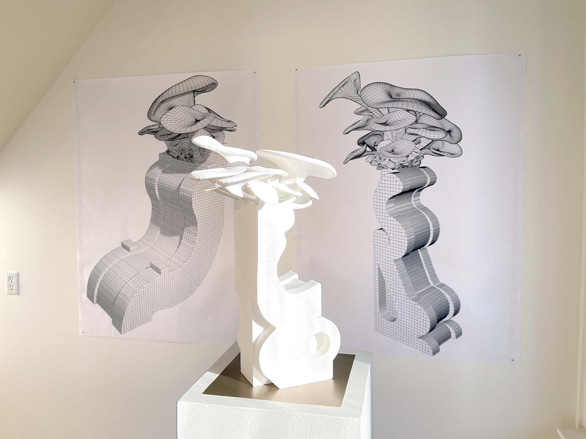

Ornamushrooms

Ornamushrooms playfully weaves Atlantic Canada's architectural heritage with speculative future ecologies through experimental sculpture, developed during a residency at the Old Town Lunenburg UNESCO World Heritage Site. Reproducing Lunenburg's vernacular ornamentation through 3D models and mycelium, Ornamushrooms probe the tension in our relationships to housing and food security amidst the global crisis of climate change.
As both recent transplant and town resident, Bluemke situates her process within a historical lineage of adapting new technologies to local tastes. The exhibition explores a provocative dialogue between rot and renewal in coastal communities. Can we embrace the decay of our social fabric, if it proves fertile ground to grow a new future?



